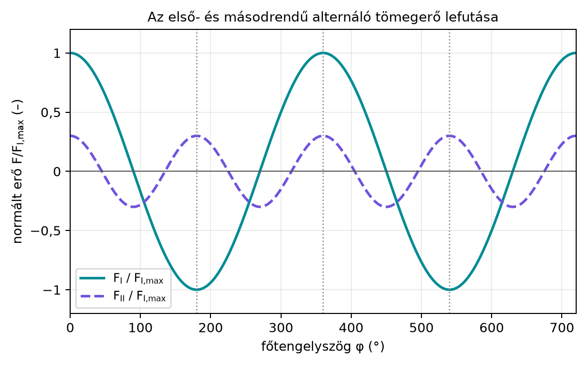

Egy ügyfél azzal hozza a járművét, hogy hidegindítás után halk, tompa kopogás hallatszik, amely a fordulatszámmal együtt változik, és gázadásra erősödik. Egy másik autón alapjáraton ketyegő, fémes zaj jelentkezik, amely a tengelykapcsoló benyomásakor megszűnik. A szerelő ilyenkor a forgattyús tengely, a fő- és hajtórúdcsapágyak, a lendkerék, illetve a kettős tömegű lendkerék állapotára gyanakszik. Ebben az alfejezetben megismerjük ezeket a szerkezeti elemeket, a rájuk ható tömegerőket, a kiegyensúlyozás elvét és az ellenőrzési módszereket, mert a motorhiba pontos behatárolása és a javítás minősége ezen múlik.
Képzeljük el a forgattyús tengelyt a motor hossztengelyével párhuzamosan, metszetben. A főcsapok a hengertömbben kialakított főcsapágy-fészkekben futnak, a hajtórúdcsapokhoz a hajtórudak csatlakoznak. A csapok közötti vállakban olajfuratok szállítják a nyomóolajat a csapágyfelületekhez. A tengely egyik végén a lendkerék, a másik végén a torziós lengéscsillapító és a vezérműtárcsa helyezkedik el. A dugattyú és a hajtórúd váltakozó mozgása, valamint a tengely forgása erőket és nyomatékokat indít meg.

Az ábra az alternáló tömegerő két fő összetevőjét mutatja. Az elsőrendű erő (folytonos görbe) a forgattyús szöggel koszinuszosan változik, a másodrendű erő (szaggatott görbe) kétszeres frekvenciával. A négyhengeres soros motoroknál az elsőrendű erők kiegyenlítik egymást, a másodrendű erők azonban összegződnek, ezért van szükség gyakran kiegyensúlyozó tengelyekre.
Definíció. A forgattyús tengely (főtengely) a forgattyús hajtómű központi forgó tengelye; a dugattyúk és hajtórudak váltakozó mozgását forgó mozgássá és nyomatékká alakítja. Részei: főcsapok, hajtórúdcsapok, forgattyúkarok, ellensúlyok, olajfuratok, valamint a lendkerék felőli és a vezérmű felőli vég.
Definíció. A lendkerék nagy tehetetlenségi nyomatékú tárcsa, amely a forgattyús tengely lökésszerű nyomatékváltozásait kisimítja, a munkavégző ütem energiáját tárolja, és a többi ütemben visszaadja, hogy a járás egyenletesebb legyen. A kettős tömegű lendkerék (DMF, dual mass flywheel) két tehetetlen tömegből és rugókból áll, amelyek a hajtáslánc torziós rezgéseit elszigetelik.
Definíció. A főcsapágy a forgattyús tengely főcsapját a hengertömbben támasztja meg. A hajtórúdcsapágy a hajtórúd nagyfejében fut a hajtórúdcsapon. Az axiális csapágy a forgattyús tengely hosszirányú elmozdulását határolja; jellemzően félgyűrűk vagy peremes főcsapágy formájában.
Összefüggés. A forgattyús hajtóműben a forgó tömeggé redukált tömeg centrifugális erőt, az alternáló mozgást végző tömeg pedig váltakozó tömegerőt hoz létre:
ahol a forgattyúsugár, a szögsebesség, a forgattyús szög, a hajtórúd-arány.
Definíció. A forgó tömegerő a forgó mozgást végző részekből származó, állandó nagyságú centrifugális erő, amely a forgattyús tengellyel együtt fordul. Az alternáló tömegerő a dugattyú és a hajtórúd felső részének gyorsulásából adódó, a forgattyús szöggel és annak kétszeresével periodikusan változó erő.
A forgattyús tengely kovácsolt, nemesített (adalékolt) acélból vagy – kisebb terhelésű motoroknál – gömbgrafitos öntöttvasból (EN-GJS, régi jelöléssel GGG) készül (anyagjelölés ellenőrizendő: gyártói adat); nagy terhelésű motoroknál edzett, nitridált vagy görgőzött felületű csapokkal. A csapok felületének keménysége és a megmunkálási érdessége a csapágy élettartamát határozza meg. A fő- és hajtórúdcsapok közötti vállakban olajfuratok vezetik a kenőolajat a főcsapágyaktól a hajtórúdcsapágyak felé; a furatok kialakítása befolyásolja a centrifugális olajtömítést és a kenést. A forgattyúkarokhoz ellensúlyok csatlakoznak, amelyek a forgó tömegerőt és részben az alternáló tömegerőt hivatottak kiegyensúlyozni. A tengelyre szerelt torziós lengéscsillapító a forgattyús tengely csavaró rezgéseit csökkenti: jellemzően gumiba ágyazott tehetetlen tömeg, vagy viszkózus olajjal töltött ház.
Az ábrán az öt főcsap a tengely forgástengelyén fekszik, a négy hajtórúdcsap a forgattyúsugárnyira, két síkban áll: az 1. és a 4. együtt fent, a 2. és a 3. együtt lent (180°). Az olajfurat (szaggatott vonal) a főcsaptól ferdén vezet a szomszédos hajtórúdcsapig; az axiális csapágy félgyűrűi a középső főcsap két oldalán ülnek.
A forgattyús tengely szögsebessége nem állandó egy fordulaton belül. A munkavégző ütemben a tengelyre nagy pillanatnyi nyomaték hat, a többi ütemben pedig lassulni próbál. Ezt a lökésszerű egyenetlenséget a lendkerék tehetetlenségi nyomatéka simítja ki.
A hagyományos lendkerék acélból vagy öntöttvasból készülő tárcsa, külső peremén fogaskoszorúval az indítómotor számára. A tárcsa központi furatát a forgattyús tengely illesztéséhez igazítják; a lendkereket a forgattyús tengely peremére illesztő csapokkal vagy aszimmetrikus csavarkiosztással pontosan egy helyzetben rögzítik. A hagyományos lendkerék a motor nyomatékát egészben továbbítja a tengelykapcsolónak.
A kettős tömegű lendkerék két részből áll: a motoroldali elsődleges tömegből és a tengelykapcsoló oldali másodlagos tömegből. A két tömeg között ívrugók, csúszógyűrűk és szilikonzsír csillapítja a torziós lengéseket. Ez azért fontos, mert a mai négy- és háromhengeres motorok nyomatéklengései erősek, és a hagyományos merev lendkerékkel a váltó zörgést, a hajtás pedig rángatást okozhat. A DMF elnyeli az egyenetlenséget, így a váltó és a hajtáslánc nyugodtabban jár. A DMF rugóinak és csúszófelületeinek kopása azonban tipikus hibaforrás.
A fő- és hajtórúdcsapágyak siklócsapágyak. A csapágycsészék acél hátból, középső rétegből és lágy, jó beágyazódó képességű futórétegből épülnek fel. A futóréteg anyaga lehet például alumínium-ón, ólom-bronz vagy műgyanta bevonat; a pontos anyag típusonként eltér. A csapágyhézag a csapágy futófelülete és a csap közötti olajrés. A hidrodinamikus kenés itt is a Tengelyek és csapágyazások alfejezetben tanult elven működik: a forgó csap olajat húz a szűkülő résbe, és a kialakuló olajfilm elválasztja a felületeket.
A csapágyhézag gyári értéke tipikusan néhány század milliméter, például . A kopással ez növekszik, csökken a hordozó olajfilm, és megindulhat a fémfémes érintkezés. Az axiális hézag a forgattyús tengely hosszirányú játéka, amelyet félgyűrűk vagy peremes csapágy határol; tipikus értéke például (ellenőrizendő: gyártói adat).
A képsor a 4. feladat munkalépéseit mutatja: a szál a tiszta csap hosszában fekszik (nem az olajfuraton); a fedelet gyártói nyomatékra húzzuk, közben a tengelyt nem szabad elfordítani, mert a szál elkenődne; a fedél levétele után a lapult szál szélességét a csomagolás skálájával vetjük össze – a szélesebb szál kisebb hézagot jelent.
A dugattyú és a dugattyúgyűrűk, a csapszeg és a hajtórúd felső része alternáló mozgást végez, tömegüket jelöli. A forgattyús tengely hajtórúdcsapját, a hajtórúd nagyfejét és a forgattyúkarok tömegét a forgó tömeghez soroljuk. A hajtórúd tömegfelosztása a kisfej és a nagyfej között típustól függően körülbelül egyharmad–kétharmad arányban történik (ellenőrizendő: konkrét hajtórúd esetén).
Szabály. Az ellensúlyok a forgó tömegerőt és az alternáló tömegerő egy részét egyensúlyozzák. Az ellensúly tömege és a tömegközéppont rádiusza szorzatának akkorának kell lennie, hogy a centrifugális erő a csapágyterhelést a kívánt szintre csökkentse.
Az alternáló erő elsőrendű összetevője , másodrendű összetevője szerint változik. Az egyhengeres motorban az elsőrendű erőt kiegyensúlyozó tengellyel lehet részlegesen csökkenteni, a másodrendű erőre pedig általában nem alkalmaznak kompenzálást, csak a tömegerő csökkentésével mérséklik. A négyhengeres soros motorban a hajtórúdcsapok egymáshoz képest -ra vannak, ezért az elsőrendű erők páronként kiejtik egymást, a másodrendű erők viszont fázisban összegződnek:
Ezt a másodrendű erőt két, egymással ellentétes irányban, a motor fordulatszámának kétszeresével forgó kiegyensúlyozó tengely csökkenti. A kiegyensúlyozó tengelyekben excenter tömegek vannak, amelyek centripetális erői a másodrendű erővel szemben hatnak.
Az ábra is mutatja, hogy a másodrendű erő (a görbe) kétszer gyorsabban leng; ezért a kiegyensúlyozó tengelyek fordulatszáma is kétszeres.
A forgattyús tengely csavarodó lengései rezonanciát okozhatnak. A kritikus fordulatszámot a tengely torziós merevsége és a hozzákapcsolt tehetetlen tömegek határozzák meg. A torziós lengéscsillapító a rezonancia közeli kilengéseket csökkenti. A legtöbb személyautóban a tengely elülső végére gumiba ágyazott tehetetlen tömegű tárcsát szerelnek; nagyobb motoroknál viszkózus, szilikonolajjal töltött ház használatos. A csillapító meghibásodása a tengely elöregedését és repedését okozhatja, ezért ellenőrzése a motor felújításakor elengedhetetlen.
Adott: , , . Keresett: a forgó tömegerő.
Ellenőrzés: , , a szorzat . Az erő nagysága nagy, de a csapágyfelület és az olajfilm ezt a terhelést elviseli. ∎
Adott: , , , . Keresett: a négyhengeres motor másodrendű tömegerőjének csúcsa.
Egy henger másodrendű erőcsúcsa:
Négy henger fázisban adódik, így:
A kiegyensúlyozó tengelyek ezt az erőt hivatottak csökkenteni. ∎
A javításhoz a gyártói adat és a mérési eljárás a mérvadó. A jellemző ellenőrzések:
Biztonsági korlát. A feladat tanműhelyi környezetre, oktató felügyeletére és a gyártói javítási utasítás betartására vonatkozik; a megadott értékek tanulási példák.
Valós eset. Egy dízel személyautó tulajdonosa arról panaszkodik, hogy alapjáraton a motor hangja mellett fémes ketyegés hallatszik, amely a tengelykapcsoló benyomásakor eltűnik, és elengedéskor visszatér. Induláskor enyhe rángatás jelentkezik. A szerelő a motortérben végzett szemrevételezés után a kettős tömegű lendkerékre gyanakszik. A diagnosztikai lépés a DMF gyártói mérési eljárása: a két tömeg közötti szögelfordulást mérőcélszerszámmal ellenőrzi, és a rugóterelő játékát vizsgálja. A mért elfordulás meghaladja a gyártói kopási határt (például felett; ellenőrizendő). A hajtott tárcsa és a kuplung borítása is a kopás jeleit mutatja. A javítás: a tengelykapcsoló készlet és a DMF cseréje, új csavarokkal, előírt nyomatékszög-módszerrel. A próbaút után a ketyegés megszűnik. Tanulság: ha a DMF kopott, a tengelykapcsoló cseréje önmagában nem oldja meg a problémát, és a csavarokat tilos újra felhasználni.
Sorold fel a forgattyús tengely részeit, és írd le, mi a lendkerék feladata! Milyen anyagokból készülhet a forgattyús tengely?
Egy egyhengeres motor forgattyúsugara , a szögsebesség . A forgó tömeg . Mekkora a forgó tömegerő? Miért nem függ a forgó tömegerő nagysága a forgattyúszögtől?
Rajzold le szövegesen a négyhengeres soros motor hajtórúdcsapjainak egymáshoz viszonyított szöghelyzetét, és magyarázd el, miért ejtik ki egymást az elsőrendű erők, miközben a másodrendű erők összegződnek!
Írj számozott munkalépéssort a főcsapágyhézag Plastigage-os ellenőrzésére a forgattyús tengely kiszerelése nélkül (az olajteknő és a csapágyfedél leszerelésével)! Milyen adatot jelölsz az ellenőrző munkalapon?
Egy négyhengeres soros motor adatai: , , , . Számold ki az egy hengerre jutó másodrendű tömegerő csúcsértékét, majd az összegzett négyhengeres erőt! Hasonlítsd össze a forgó tömegerővel, ha ugyanazon a tengelyen.
Ügyfélpanasz: alapjáraton ketyegő hang, a tengelykapcsoló benyomásakor megszűnik. Sorold fel a lehetséges okokat és a megerősítő méréseket, majd javasolj javítást! Milyen biztonsági és gyártói előírásokat tartasz be?
1. A forgattyús tengely részei: főcsapok, hajtórúdcsapok, forgattyúkarok, ellensúlyok, olajfuratok, valamint a vezérmű- és lendkerékoldali vég. A lendkerék a forgattyús tengely nyomatéklengéseit simítja, tárolja a munkavégző ütem energiáját, és átadja a nyomatékot a tengelykapcsolónak. Anyagok: nemesített acél, gömbgrafitos öntöttvas, nagy terhelésnél nitridált vagy edzett acél.
2. , . Az erő a tengely forgási síkjában, a forgattyúscsaptól kifelé hat. Nagysága nem függ a forgattyúszögtől, mert a forgó tömeg állandó sugáron, állandó szögsebességgel kering: csak az iránya fordul együtt a forgattyúval (az alternáló erővel ellentétben, amely szerint változik).
3. A négyhengeres soros motorban a hajtórúdcsapok páronként -ra vannak. Az elsőrendű erő . Amikor az egyik henger -nél van, a vele szemben lévő henger -nál, így , a két erő összege nulla. A másodrendű erő . A -os eltolás , tehát a másodrendű erők azonos fázisban összegződnek, ezért szükséges a kiegyensúlyozó tengely.
4. Munkalépések: 0) az olajteknő leszerelése (a gyártói eljárás szerint); 1) a főcsapágyfedél csavarjainak jelölése, eltávolítása; 2) a csap és a csapágycsésze olajmentesre tisztítása, majd a megfelelő hosszúságú Plastigage szál elhelyezése a csapra; 3) a fedél visszaszerelése, a csavarokat a gyártói nyomatékra húzni (pl. , ellenőrizendő) – a fedél meghúzása után a tengelyt elforgatni tilos, mert a szál elkenődik; beépített motornál a tengelyt alulról meg kell támasztani (ellenőrizendő: gyártói eljárás); 4) a fedél ismételt eltávolítása; 5) a deformált szál szélességének összehasonlítása a skálával; 6) az eredmény rögzítése a munkalapon (csap helye, mért hézag, előírt tartomány, megjegyzés); 7) a szálmaradvány eltávolítása, a csésze és a csap olajozása, végleges szerelés.
5. . Egy henger másodrendű csúcsa:
Négy henger esetén:
A forgó tömegerő:
A forgó erő nagyobb, de a másodrendű erőt ki kell egyensúlyozni, mert a felfüggesztésre és a karosszériára rezgésként hat.
6. Lehetséges okok: kettős tömegű lendkerék kopott, a tengelykapcsoló kinyomócsapágy, a hajtórúd- vagy főcsapágy kopása, a lendkerék csavarjai lazák. Megerősítő mérések: szemrevételezés, hallgatózós behatárolás, DMF szögelfordulás mérése, a csapágyhézag és az axiális hézag ellenőrzése, a tengelykapcsoló működtetése közben a zaj változása. A javítás: DMF és tengelykapcsoló készlet cseréje új csavarokkal, gyártói nyomaték-szög módszerrel; a csapágyak ellenőrzése. Be kell tartani a gyártói javítási utasítást, a biztonsági előírásokat, és minden meghúzási nyomatékot, kopási határt ellenőrizni kell.
A forgattyús tengely a dugattyúk váltakozó mozgását forgó mozgássá alakítja. Részei a fő- és hajtórúdcsapok, a forgattyúkarok, az ellensúlyok és az olajfuratok. A torziós lengéscsillapító a csavarólengéseket mérsékli. A lendkerék a nyomatéklengéseket simítja; a kettős tömegű lendkerék rugókkal elszigeteli a hajtásláncot. A fő- és hajtórúdcsapágyak siklócsapágyak, a csapágyhézagot gyártói előírással, például Plastigage méréssel kell ellenőrizni. A forgó tömegerő , az alternáló tömegerő elsőrendű , másodrendű szerint változik. A négyhengeres soros motorban az elsőrendű erők kiejtik egymást, a másodrendű erők összegződnek, ezért kiegyensúlyozó tengelyekre van szükség. Továbbvitt eredmény: a tömegerők és a kiegyensúlyozás elvét használjuk a Hengertömb, hengerfej, hengerfejtömítés, égéstér, szívó- és kipufogórendszer alfejezetben a motortartó és bordázat igénybevételénél, a Tengelykapcsolók: száraz súrlódó, kettős tömegű lendkerék, hidrodinamikus alfejezetben a DMF működésénél, valamint a(z) A motor ki- és beszerelése, szétszerelése és a forgattyús hajtómű hibafelvételezése alfejezetben a csapágy- és lendkerék-ellenőrzés során.
Elsődleges forrás: gyártói javítási utasítás és adattáblázatok. A csapágyhézag, az axiális hézag, a tömegtűrések, a csavarok meghúzási nyomatéka és a DMF mérési határértékei járműtípusonként változnak, ezért a megadott értékek tanulási példák. A hajtórúd tömegfelosztás pontos aránya és a torziós lengéscsillapító típusa a gyártói konstrukciótól függ. A forgattyús tengely anyagminősége és hőkezelése a gyártói specifikációban szerepel. Az említett meghúzási nyomatékok és kopási határok minden esetben ellenőrizendők: gyártói adat.